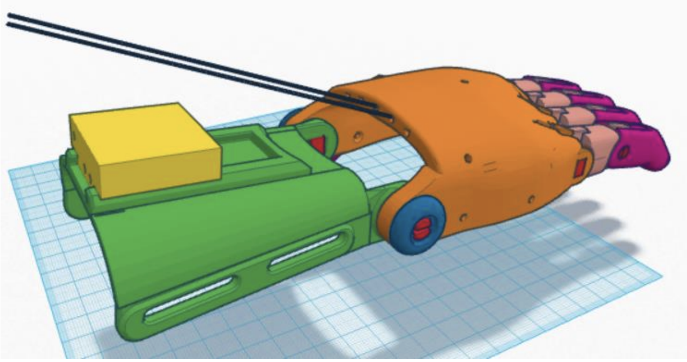
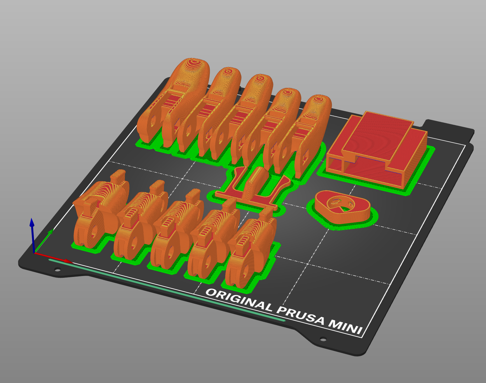
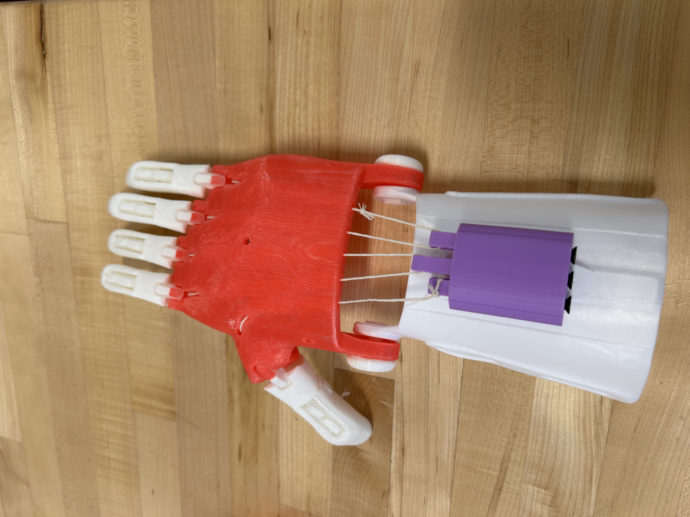
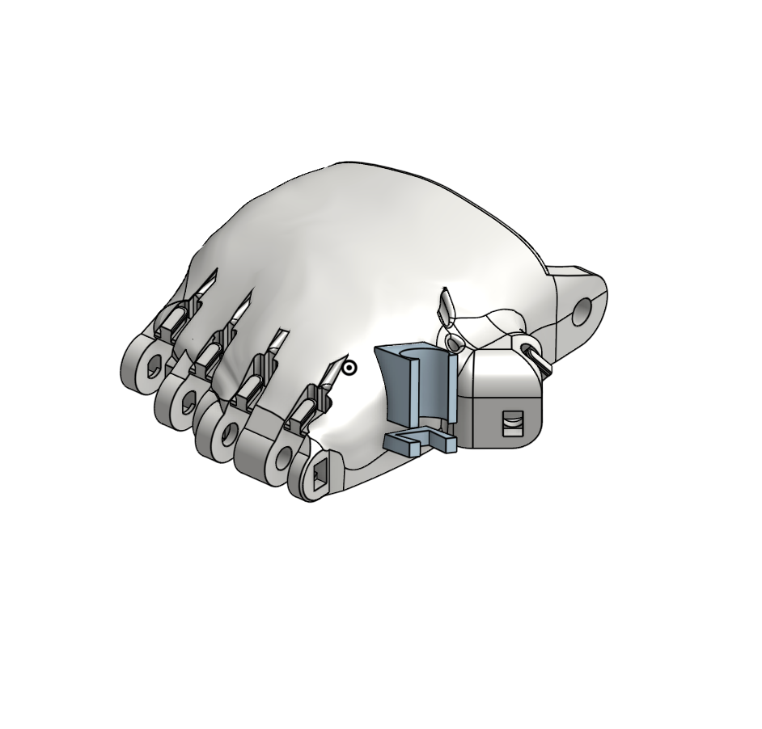

Design Project: Assistive Tech, Documentation, and Conribution
Printer Settings
Prusa Mini+ with Input Shaper 3D Printer
Generic PLA filament
0.4mm Nozzle
0.2mm Layer Height
2 Layer Raft (for small components)
Automatic Support Generation
Technical Tools
OnShape
NIH 3D Print Exchange
E-Nable hub
Other previously used tools: Github, Sublime, Prusa Slicer, Claude AI
Overview
Download Formal Write UpEcosystem Review
To start off this project, we explored three different sites that offered open-source assistive device designs for 3D printing. These three sites would eventually be important in our final product for this project, and so it was an interesting exercise to investigate the details of each. The first page I looked at was the E-Nable Hub. I was surprised to find that it operated similarly to a blog. The first thing you see when you log in is almost reminiscent of Reddit, where important posts appear on your dashboard. However, these posts are not random funnies thought up by anonymous users; they are notifications about healthcare meetings and prosthetic hand design improvements. I enjoyed this close community feel to the main page, but I was unimpressed by the page for finding device files. The Phoenix v2 hand, for example, doesn’t have a CAD file on the website. The webpage looks outdated, to say the least. The content of the site, however, is very much up-to-date and contains most, if not all, of the information I need to build a device. The second site I looked at was the NIH 3D Print Exchange. I’ve been on various NIH pages before researching various things, so I felt somewhat at home here. The NIH exchange page also reminded me of an open-source site I had visited before for a previous project. The NIH device selection page seems inspired by the home page of the Makers Making Change site. I quite like this design, where a grid as big as your browser filled with devices moves around for you on a scroll wheel. The E-Nable Hub has only a few options listed in a corner of your screen. I was also surprised to find that the NIH site had more E-Nable devices listed than the E-Nable Hub. I may have simply missed these other devices on the E-Nable site, but at the very least, NIH highlighted them much more. The last website I visited as part of the review was one I’ve seen before and previously mentioned. The Makers Making Change site. This site is my favorite, to be sure, aside from the fact that it doesn’t list the Phoenix v2 hand. Scrolling through their home page feels like picking a character to play as in a video game. The information on each device listed is also extensive. If I wanted inspiration for an assistive device project, I would go to Makers Making Change first. I’m especially impressed by the Maker Wanted page. When logged into the site, one can request or accept Maker Wanted posts. Here, people without 3D printers or electronics experience request builds from makers who have those resources. This assistive device ecosystem review also included a critique of the documentation available for building a prosthetic hand. The review also provided a launchpad to create our own supplementary documentation.
Documentation Reveiw

Both the NIH exchange and the E-Nable Hub had the same instructions for building the Phoenix v2 prosthetic hand. We were given a framework to evaluate these instructions based on six parameters meant to measure how clear and accessible they were. The PDF containing the instructions was not only quite clear and complete but also easy to find as well. The instructions included not only pictures of a real hand but also screenshots from the CAD file showing exactly where strings had to be installed. In most cases, these instructions are all one might need. However, our framework also covers other special cases. The videos included are an option for those hard of hearing, but theres four of them, and navigating through all of them would be frustrating. Also, these instructions are only in english, limiting the people who can actually understand them.
The Pheonix v2
One main goal for this project was to print and assemble the Phoenix v2 prosthetic hand. The hand is composed of many parts, including proximal and distal components for the fingers, tensioner pins for the gripping action, and tiny tubes throughout the palm that channel the strings controlling the fingers. In total, printing each part took four separate prints and close to eight hours. This was partially my fault, as I forgot to print the string controller, and it actually ended up being too small to fit on the hand. But, after rummaging through the spare parts drawer, I combined a Phoenix v3 forearm, a working string controller, and my v2 palm and fingers to create a fully functioning hand. Unfortunately, my partner was sick for most of this project, so we didn’t have many opportunities to take pictures of each other building the hand. This worried me at first, in anticipation of the documentation I wanted to create, so I pivoted to something that doesn’t require many visuals, but I digress. We did document important parts of the assembly process, and one of those pictures is shown here. Printing and assembling the hand was the most straightforward part of this project. I enjoyed solely focusing on building the hand and letting hard things like ideation leave my mind. These hands are very well designed, but not infallible. In fact, there are a million things that you can’t control, which might make your hand less effective. The hand relies on print quality, string quality, and the effectiveness of other materials to work well. In this way, building the hand involved a fair bit of jury rigging, where some parts had to be more or less shoved into place. All things considered, our hand turned out well, and its gripping action works better than many of the example hands we saw.
Printing

Printing the hand’s components presented its own challenges. Printing many small components at once on the Prusa Minis means risking those pieces popping off and interfering with an ongoing print. To account for this, we printed the small components with a raft, a small layer of plastic that surrounds the piece so it’s better adhered to the plate and is hence less likely to pop out of place. In addition, these hands were initially designed for small children, so to make self-testing the hands viable, we had to scale the STL files up to 150% and include an optional palm crossbar to enable holding the hand ourselves. The files also had pre-designed supports for the palm, so we didn’t need the autogenerated ones that PrusaSlicer can create. The picture here shows an example of a gcode file with the rafts around the small parts at 150% scale.
Assembly

While assembling the hand, we ran into some issues that not only pushed our project timeline back but also inspired my supplementary documentation. The instructions were very clear, as I’ve said above, but efficient assembly requires some tips and tricks that the existing documentation just didn’t include. For example, the first day my partner and I were both in class, he focused on starting to put together the hand, while I printed the rest of the parts and designed an extension to the device. Unfortunately, when I returned next class period, I found that almost all of the fingers were attached backwards. This meant I had to go back and redo these steps before finishing the hand. If the documentation had included the small explicit detail of which end of the part went where, I wouldn’t have encountered this issue. In addition, I also had to repurpose spare parts due to the gripper box not fitting on the forearm, as I described above. With my partner missing, we couldn’t multitask while I was assembling the hand. The situation definitely negatively affected our project, which may become clear in later steps. The picture here shows our complete Phoenix v2/3 hand.
Documentation
The open-source design website review was meant to build up to a contribution back to that common space in the form of supplementary documentation. There are relatively few people that have actually built one of these prosthetic hands, and that unique experience allows us to provide more information to those who want to build a hand in the future. Although I couldn't take many pictures while building the hand, I could note the tips and tricks that helped. I decided to compile these little tricks, sometimes thought up by me, sometimes learned from other students, into a concise guide to make someone’s hand building quick and easy. These little tips aren’t complicated, and as such, I figured they need less visual reinforcement. As my partner wasn’t in class a lot during this project, I couldn't discuss this much with him. However, as I ended up being the main assembler of the phoenix hand, I figured making the guild myself wouldn’t leave out a ton of his input. For all of the projects we’ve done so far, we’ve relied heavily on open-source CAD files and documentation. Each project has required use of either an open-source file, tutorial, or even software. To make some small contribution back to this space feels good, as without access to these commons, none of our projects would be possible.
Click on the link to access the Phoenix v2 prosthetic hand assembly tips and tricks guide! Peer reviews suggest that this guide covers almost all the tips and tricks associated with the assembly steps covered. In general, I got positive feedback on the guide.
Design Extension
Another way to contribute back to the open-source community is to remix or extend a design in some way. Despite its excellent design, the Phoenix hand is not a perfect device. As such, there are features that the hand just doesn’t have. To brainstorm a feature I could add to the hand, I turned to AI to help me ideate. I ended up choosing to focus on how the hand could support a writing utensil like a pen or pencil. This to me seemed like a simple everyday task that would be impossible with the current hand. Because the hand doesn’t have precise gripping action, I opted to design an additional component for the palm that could facilitate clipping a pen into place. Claude pointed out that this pen needed to be stable in order to write with, so I decided on a hybrid design. A smooth circular channel would do most of the work to hold the pencil, while a secondary triangular clip would work against the geometry of the pen to stabilize it. I made the part to fit the palm between the thumb and forefinger so it could be glued or taped to a finished hand. I wanted to further this design with a palm specifically designed to interface with this add-on, including an indented well where the pen holder could clip into. Unfortunately, I just didn’t have enough time to complete this part of the design. I also didn’t have an opportunity to actually test this extension, which frankly sucked but was understandable, as I had been doing most of the project myself while my partner was sick. While I’m not actually sure how well this would have worked, but I’m sure it would’ve needed further iterations before it was truly functional. While I don’t have a sketch of my idea, I do have the OnShape file where I designed it. In this picture, you can see how I formed the pen holder to the palm with the Boolean tool in OnShape to create a perfect puzzle-piece interface.
Extension File

Here is the OnShape design for my extension to the Phoenix v2 hand. I had to use all of my OnShape knowledge to make this design, like creating new planes, using construction lines, boolean tools, and other geometric tools. I also tried to make this design as parametric as possible, so much of it relies on the diameter of the pen or pencil you want to hold. In addition, I discussed optimal pencil-holding angles to make writing as intuitive as possible with this add-on. In theory, it should attach to the hand with any common adhesive tool like hot glue, super glue, plastic glue, or even tape. Unfortunately, as I discussed above, I didn’t have time to actually test the add-on due to time constraints and my partner's illness. This specific extension leverages the Task Unification facet of Systematic Inventive Thinking. By creating an add-on that allows new functionality, I’ve unified the tasks of basic gripping and holding with more precise and subtle functions like writing.
Ethical Reflection, Bridge to the Capstone
AWhen building assistive technology, ethical impacts are at the forefront of the design process. The Phoenix hands are meant to improve quality of life for amputees who can’t get more advanced prosthetics. While the hands are well designed, there are small parts of the building process that are less accessible than they might seem. For example, owning a 3D printer and buying high-quality filament is expensive. Poorer communities are forced to outsource this to people with access to this technology. In this way, prosthetics have only become cheaper, not more accessible in any other way. This is an accomplishment, but not a fully solved problem. In addition, the hands are in many ways “one size fits all.” While you can scale the design to allow for large forearms and hands, this is not a precise way to enlarge the device, and often small pieces need to be individually scaled to different sizes. This reminds me of the Microsoft Inclusive Design axiom that states a problem should be solved for one and extended to many. To me, the phoenix hands work incredibly well for certain sizes of humans in certain places that have a specific collection of resources. I think more detailed sizing guides, increasing accessibility to these devices, and widening the coverage of functionalities for the hand would be a great way to continue extending the design for many people. Something I think I’ve learned from this project is that simplicity is a powerful thing. The most versatile and long-lasting tools also always have the simplest designs. I think even the Phoenix hand’s gripping action is a good example of a simple design. All of the gripping action is dictated by one piece of plastic and three strings. From simple designs come simple extensions, and eventually these simplicities can sum to something much more complex.